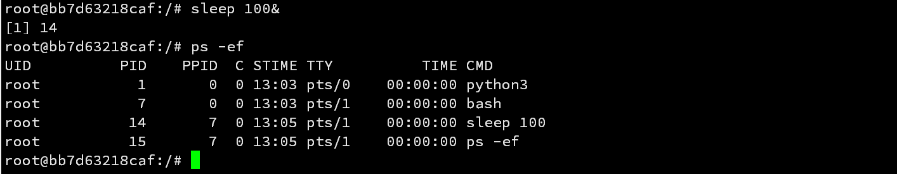

Kubernetes集群实践（十四）tini进程管理器
本文主要介绍tini进程管理器。
关键词：k8s，tini
背景
Linux系统中，PID为1的进程承担了两个重要的使命：
传递信号给子进程
如果pid为1的进程，无法向其子进程传递信号，可能导致容器发送SIGTERM信号后，父进程等待子进程退出。若此时父进程无法传递信号到子进程，整个容器无法正常退出，除非向父进程传递SIGKILL信号，使其强行退出。而这样会导致一些退出前的操作无法完成，如关闭数据库连接，关闭输入输出流等。
接管孤儿进程，防止出现僵尸进程
如果一个进程A中运行了一个子进程B，而子进程B创建了一个子进程C，若此时子进程B异常退出（通过SIGKILL信号，并不会发送SIGKILL信号给进程C），此时进程C会被进程A接管。进程A不会传递信号到进程C，这就导致了进程B结束了，但是没有回收其子进程C，子进程C就变成了僵尸进程。
在docker中，docker stop会发送SIGTERM信号给容器的主进程来处理。如果主进程没有处理这个信号，docker会在等待10s后，发送SIGKILL信号来强制终止。
tini介绍
tini是一个轻量级init进程，被设计作为容器的1号进程。
tini只会做以下事情：
- 生成一个进程，并等待它退出；
- 收割僵尸进程；
- 执行信号转发。
tini被设计为一个服务于容器的单进程管理器，通常只能管理一个进程。一般情况下，服务容器化要求一个容器尽量只作为一件事情，即只有一个进程或一组进程。
tini编译产物只有一个可执行文件，其静态版本不依赖其他软件，可以在任意发行版中使用。
tini使用
直接把tini打包到镜像中，配置ENTRYPOINT为["/tini", "--"]。选项要加在--前面，例如：["/tini", "-vvv", "--"]
tini优势
通过tini可以避免业务进程重复编写本来由1号进程该做的事情，帮助传统的应用可以无感迁移到容器化部署。
- 防止僵尸进程的产生。如果业务进程作为容器的1号进程，且没有等待子进程退出的逻辑，则可能会产生僵尸进程。
- 实现优雅退出。如果业务进程作为容器的1号进程，且没有处理信号的逻辑，当1号进程收到信号时，什么都不做。因为PID 1它会忽略具有默认操作的任何信号，除非实现了监听 SIGTERM 信号的逻辑。
- docker ce发行版默认包含tini。只需要docker
run的是添加
--init选项即可，不需要改变镜像，不需要添加entrypoint和command。
shell可以处理僵尸进程，但无法做到优雅推出。shell作为PID1进程时不会将信号转发给子进程。
tini实践
通过ENTRYPOINT启动tini作为进程管理器，然后再通过tini运行CMD指定的程序命令
1 | FROM centos:7 |
下面是entrypoint.sh文件的内容
1 |
|
tini作为容器里的1号进程，首先启动了一个sshd进程，进程号为17，使得从容器外部可以连接到内部。然后启动了一个java进程，进程号为7。
tini作为容器中的init进程，可以启动多个进程。同时还可以将信号转发给子进程，实现优雅启停；等待子进程退出，回收子进程占用的资源和进程号，防止出现僵尸进程。
拓展
容器中的僵尸进程
当容器的1号进程无法将信号转发到子进程时，就会出现僵尸进程，下面演示一下。
启动一个python3容器，然后通过exec方式进入容器
后台启动一个sleep任务，此时该sleep进程是通过内核init方式创建的bash进行的子进程

此时使用ctrl+d退出容器，bash进程被杀死，而后台运行的sleep进程仍然存活，sleep进程的父进程变为python3。当任务结束后，子进程sleep 100需要将状态码等一系列信息返回给父进程python3，然而父进程并没有调用waitpid()等函数获取子进程的返回值等信息，此时子进程就成为了僵尸进程，无法释放pid等资源。只要pid为1的进程不结束，资源就无法得到释放。